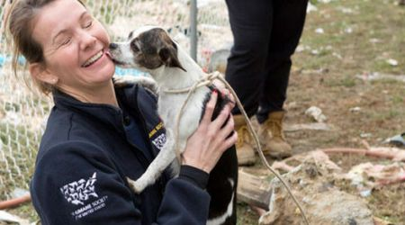
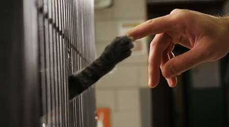

- info@patitasdcorazon
- Cel. 318 522 4273
- Calle 26a 20A - 18
PATITAS D´ CORAZON
Adopta un amigo verdadero.
Tú Puedes ayudar, Nosotros te Orientamos
Tal vez cuando sales vez cantidades de animales en la calle y quisieras ayudar pero no te decides. En nuestra fundación encuentras la oportunidad para hacerlo. Puedes Adoptar o Apadrinar un nuevo amigo.
Hasta que no hayas amado a un animal, una parte de tu alma permanecerá dormida.Anatole France
Quiero Donar